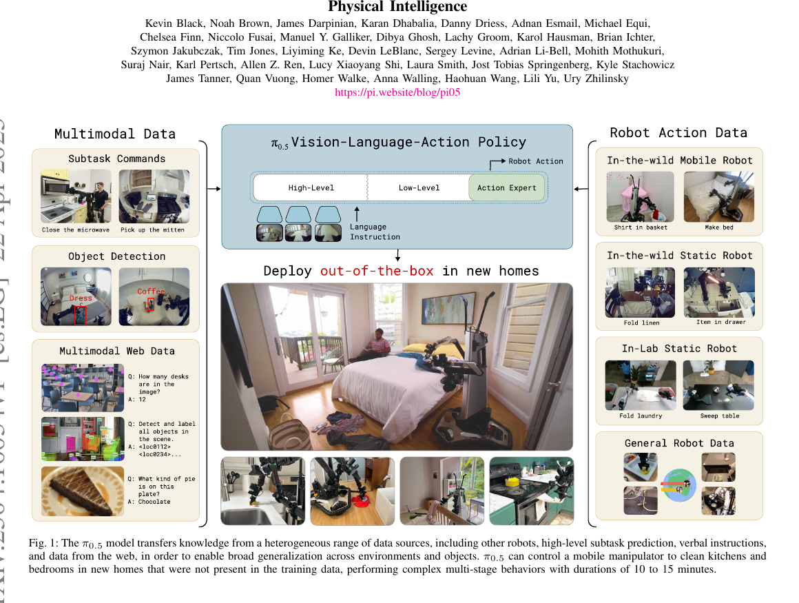
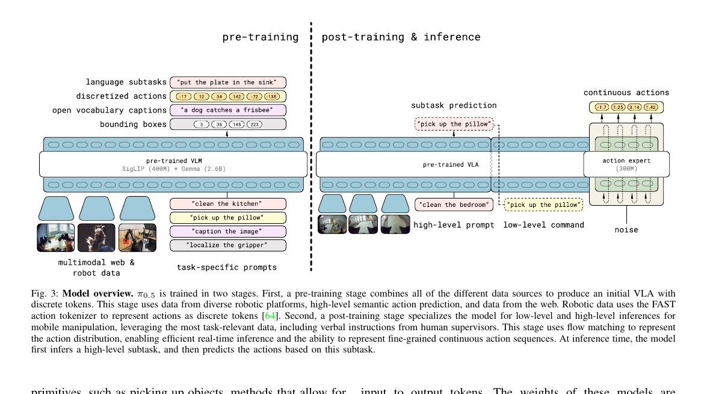
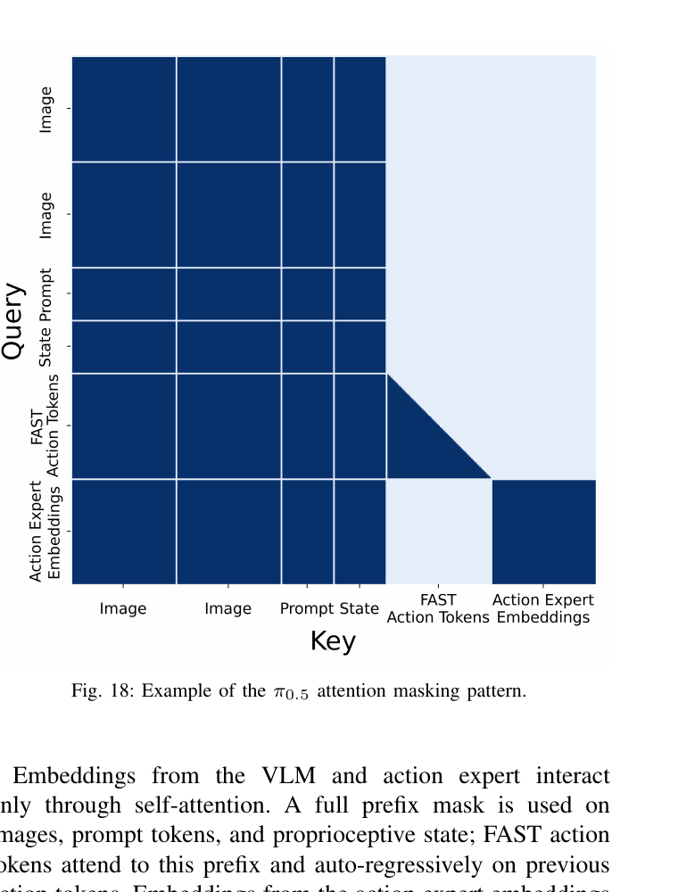
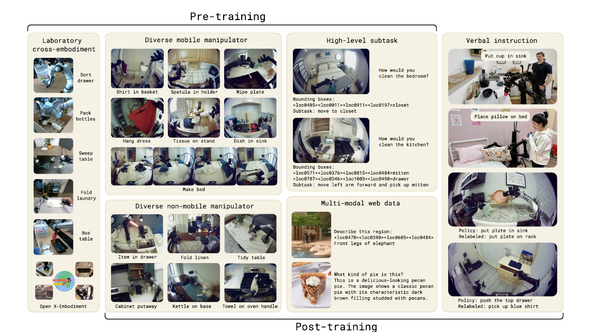
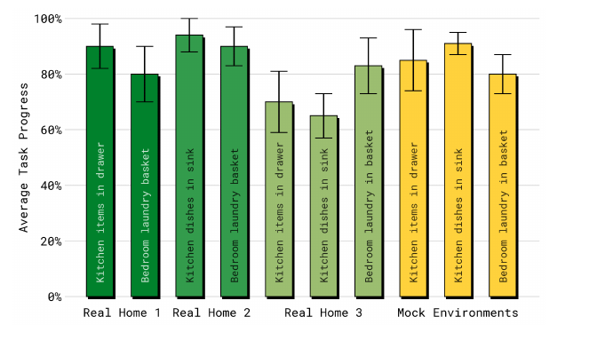
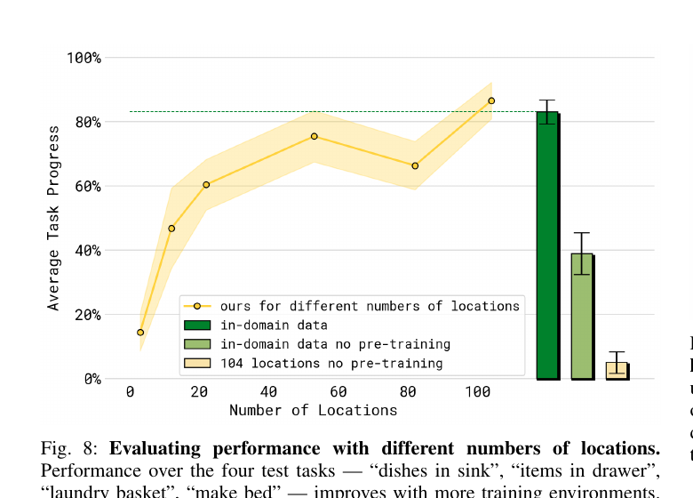
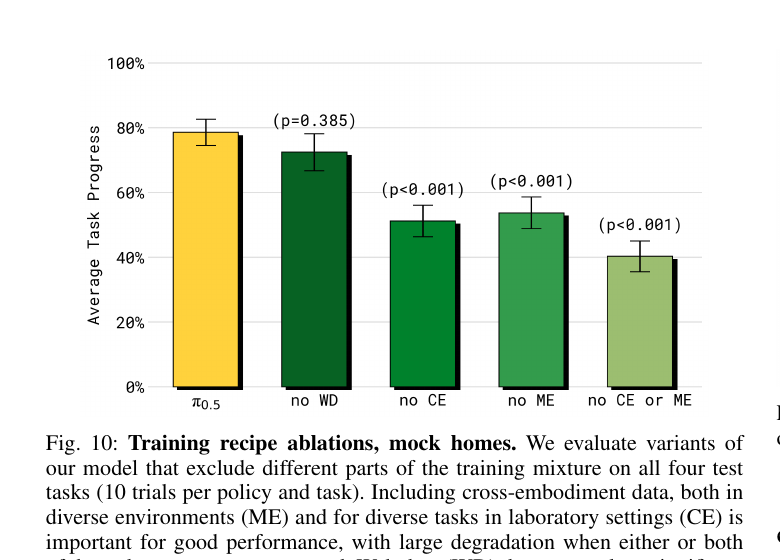
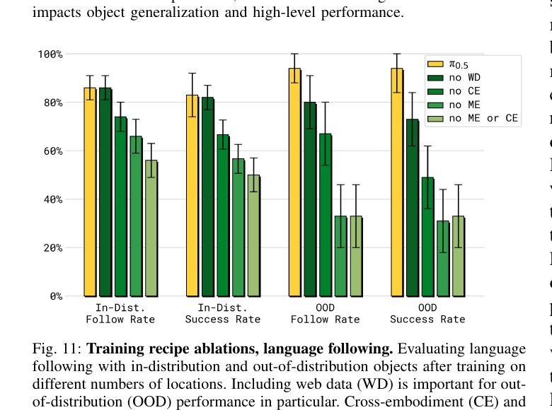
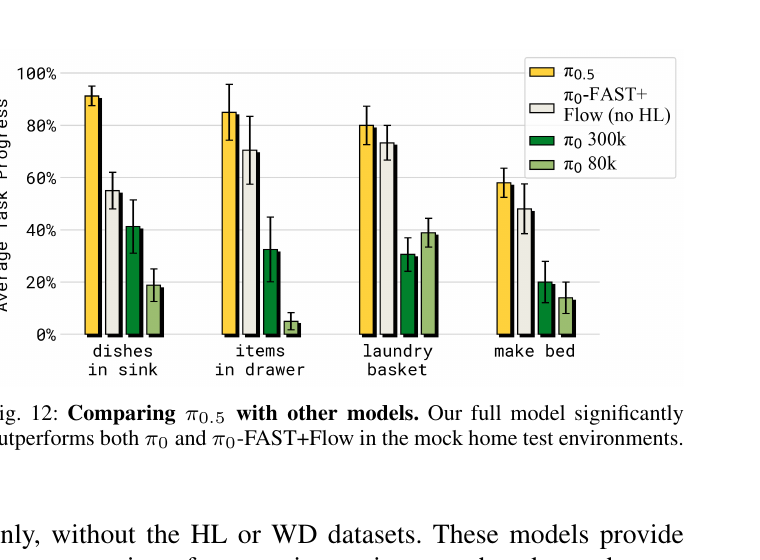
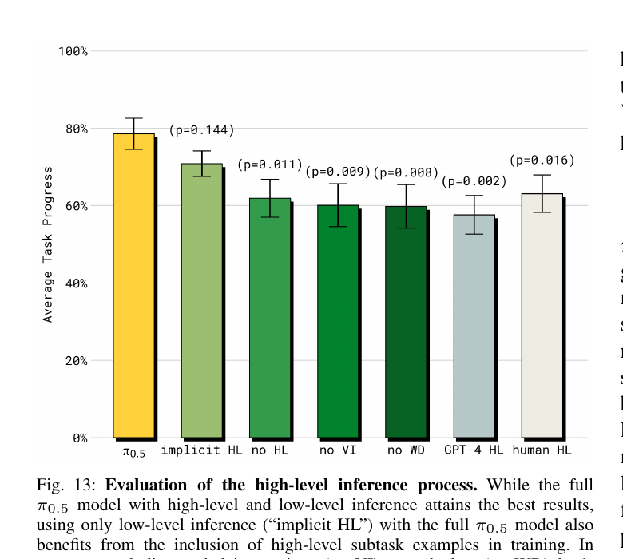

π₀.₅: a Vision-Language-Action Model with Open-World Generalization
Physical Intelligence · Black, Brown, Darpinian, Driess, Finn, Levine et al. · arXiv 2504.16054 · 2025-04
π₀.₅ 不是一个全新架构——它是 π₀ 的一次"系统级升级"，关键词只有一个： open-world generalization（在没见过的真实家里干活）。 做法是：架构上动两刀（state 写进 prompt、用 adaRMSNorm 注入 flow timestep）， 训练上换成两阶段（discrete pre-train → flow post-train），数据上把 非机器人 web 数据 + 非移动机器人数据 + 高层 subtask 标注 一起喂进去，让模型既能说（"先 pick up the pillow"）又能做（连续动作 chunk）。
阅读路径：先看 §2 的差异速览（如果你已经读过 π₀），再分别看 架构（§3）、训练（§4）、实验（§5）。 §6 对照 openpi 源码， 说明哪些组件公开了、哪些只在 paper 里出现。
§1 它在 π₀ 之上多解决了什么
π₀ 已经把"大 pre-train + 小 post-train"做成了；但 π₀ 评测里多数任务在训练过的场景上做。 π₀.₅ 直面下一个 open question——能不能在完全没见过的真家里直接 deploy？ 它给的答案是"可以"，前提是训练时把异质数据源做co-training。
π₀.₅ 通过把多机器人本体（other robots）+ 高层语义子任务（high-level subtask prediction）+ 人工口头指令（verbal instructions）+ 网络多模态数据（image-caption / VQA / 物体检测） 混进一个统一的 next-token 训练目标里， 仅用约 400 小时移动机器人数据，就能让 VLA 在从未见过的真实卧室/厨房里 连续干 10–15 分钟、完成多阶段清理任务。
展开原文 · Abstract 核心句
"We describe π₀.₅, a new model based on π₀ that uses co-training on heterogeneous tasks to enable broad generalization. ... Our experiments show that this kind of knowledge transfer is essential for effective generalization, and we demonstrate for the first time that an end-to-end learning-enabled robotic system can perform long-horizon and dexterous manipulation skills, such as cleaning a kitchen or bedroom, in entirely new homes."

π₀ 那一代像"专科医生"——只看手术录像（机器人轨迹）反复练。 π₀.₅ 像"刚毕业的住院医"——除了练手术（机器人轨迹），还读教科书（web 数据）、 听上级口述（verbal instructions）、看不同医院的录像（异质机器人）。 最后从来没在新家见过手术台，也能通过语义抽象把"擦溢出"这种命令拆分到位。
§2 与 π₀ 的差异概览
读 π₀.₅ 最高效的姿势是把它和 π₀ 并排看。 上一节讲了它要做的事（open-world 泛化）。这节用一张表把 三层（架构 / 训练 / 数据）差异锁死，后面三章只是在展开这张表。
2.1 三层差异对照
| 层面 | π₀（2024-10） | π₀.₅（2025-04） |
| 骨干 VLM | PaliGemma（SigLIP + Gemma 2.6B） | 同 PaliGemma（不变） |
| Action Expert | ~300M 小 transformer，flow matching 头 | 同 ~300M，但 timestep 注入换成 adaRMSNorm |
| 状态 qt 输入 | 连续 vector → state_proj → 1 个 suffix token |
离散化 256 桶 → 拼进 prompt 文本（"State: 12 87 ...;\nAction:"） |
max_token_len |
48 | 200（要装下离散 state + 长 prompt） |
| 训练阶段 | 单阶段：flow matching loss | 两阶段： discrete next-token (FAST) → flow matching post-train |
| 训练损失 | Lflow = E‖ω − a − fθ‖² | L = H(text logits) + α · ‖ω − a − fθ‖²，pre-train α=0，post-train α=10 |
| 高层推理 (HL) | 无（只产 action chunk） | 同一模型先产 subtask 文本，再产 actions（chain-of-thought） |
| 训练数据 | OXE + 内部多本体机器人数据 | + 移动 manipulation 400h + 多环境非移动 + 实验室跨本体 + web (caption / VQA / detection) + HL 子任务标注 + 口头指令 (VI) |
| 评测重点 | 训练分布内 + 少量微调任务 | 完全没见过的真家（mock 厨房 / 卧室 + 3 个真家） |
Pi0Config(pi05=True) 一个 flag 把上表里所有"架构"差异点齐了——具体就两件事，
源码 pi0_config.py
注释里写得很直接：
# Pi05 has two differences from Pi0:
# - the state input is part of the discrete language tokens
# rather than a continuous input that is part of the suffix
# - the action expert uses adaRMSNorm to inject the flow matching timestep
pi05: bool = False训练数据 / HL inference / web co-training 那一层的差异，openpi 就完全不开放了—— §6 会逐项对照。
§3 架构变化
上一节给了三点架构改动的结论。这节展开它们。 为什么 state 要从 suffix 搬到 prompt？为什么 timestep 要从 MLP 换成 adaRMSNorm？ 两个改动看起来无伤大雅，但各自服务一个目的—— state 进 prompt 是为了和"两阶段训练"里的纯 discrete pre-train对齐， adaRMSNorm 是 flow timestep 在大模型里的标准做法（DiT 早就这么干了）。
3.1 数学预备 · 模仿学习目标
架构里所有"为什么这么写"的回答，最终都指向同一个数学目标。 π₀.₅ 用的是 imitation learning（模仿学习）： 给定大量"人类示教"数据，让模型学会"看到这个画面 + 听到这句话时，要输出哪些动作"。 没有奖励函数、没有探索、没有 RL——是纯监督学习。
生活类比：你是个学厨学徒，师傅在你面前做了 1000 次"切洋葱"，每次你都看着他怎么握刀、怎么下手。 后来师傅说"切洋葱"，你就照师傅最常做的那种动作切——这就是 imitation learning。
① 核心目标函数 · 一个 expectation
一项一项拆：
πθ | 策略（policy），就是这个 VLA 模型本身。θ 是它所有可学习参数（PaliGemma + action expert 加起来 ~3B）。 |
at:t+H | 从 t 时刻起未来 H 步的动作序列。π₀.₅ 里 H = 50（即一个 action chunk）。 |
ot | 当前观察 = 3 路相机图像 + 关节状态 qt。 |
l | 语言指令（language instruction）。可以是高层 "clean the bedroom"，也可以是低层 "pick up the pillow"。 |
D | 示教数据集（demonstration dataset），几千小时的 (动作, 观察, 指令) 三元组。 |
E[...] | 对整个数据集求期望——意思是"对所有训练样本求平均"。 |
log πθ(a | o, l) | 模型在看到 (o, l) 时，给出"真实动作 a"的对数概率。越高说明模型越"同意"人类的选择。 |
maxθ | 调整参数 θ，让上面那个对数概率的期望最大。 |
一句话翻译："调参数让模型在每条示教数据上预测人类动作的概率最大"。 这就是极大似然估计（MLE），也叫 behavioral cloning（行为克隆）， 是 imitation learning 最基础的形式。
| imitation learning（π₀.₅ 用） | reinforcement learning | |
| 数据来源 | 人类示教（offline） | 智能体自己探索（online/offline） |
| 监督信号 | "应该做的动作"——直接给 label | 奖励 r(s, a)——间接，需要 credit assignment |
| 损失 | MLE / cross-entropy | policy gradient / Q-learning / ... |
| 样本效率 | 高（每条数据都直接告诉你答案） | 低（要试错） |
| 能力上限 | 受限于示教质量（不会超过老师） | 理论上无上限 |
π₀.₅ 选 imitation learning 是因为机器人 RL 在真实世界里太贵——一次失败可能撞坏机械臂、打碎瓷碗。 示教数据虽然贵（要请人遥操作几千小时），但比 RL 探索的代价小得多。
② 联合分布拆解 · HL / LL 的数学根据
① 里只写了"给观察出动作"。但 π₀.₅ 还要同时输出文本子任务 l̂（"pick up the pillow"）。
所以论文写的更完整的联合分布是：
其中 $l$ 是用户给的高层任务（"clean the bedroom"），$\hat\ell$ 是模型自己产出的子任务文本。 关键一步是论文把这个联合分布拆成两个条件分布：
注意右边第一项的条件是 l̂ 不是 l！这背后的假设是：
给定具体子任务 l̂ 后，动作分布就和原始高层指令 l 无关了——
知道"现在该 pick up the pillow"就够了，不需要再记得"目标是 clean the bedroom"。
| π(l̂ | o, l) | HL（high-level inference）：看观察 + 高层指令，AR 解码出文本子任务。 对应 §3.2.2 step 2。 |
| π(a | o, l̂) | LL（low-level inference）：看观察 + 子任务文本，flow matching 出动作。 对应 §3.2.2 step 4。 |
"用同一个模型做两件事"在数学上就是这一个等式—— 两个条件分布共享 θ，只是 prompt 的内容不同。这就是 §3.2.2 里"两遍 forward"的根据。
③ 观察 + transformer 的形式化
观察的具体组成：
n 路相机图像 + 当前关节状态 qt（含关节角、夹爪、躯干升降、底盘速度）。 qt 离散化后作为文本 token 输入——这就是 §3.4 "state 进 prompt" 的实现细节。
Transformer 函数：
x1:N | N 个输入 token（"token" 用得宽松，包括离散和连续） |
ρ(xi) | token 类型，3 种：xiw ∈ ℕ（文本）/ xiI ∈ ℝp×p×3（图像 patch）/ xia ∈ ℝd（动作的 flow 中间值） |
A(x1:N) | 注意力矩阵 ∈ [0,1]N×N，决定谁能看见谁。image patch / 文本 prompt / 连续 action 内部用双向，跨段 causal——详见 §3.6 Fig 18。 |
不同 expert 权重 | 动作 token 走 action expert（独立一组权重），其他 token 走 PaliGemma 主干 |
输出分两路：
前 M 个是文本 logits（用来 sample 出 l̂）； 后 H 个是 action expert 的输出（线性投影成 at:t+H）。 M + H ≤ N 意味着不是所有位置都参与 loss——图像 patch 那些位置就没有 loss。
④ 这个 max log 怎么变成"loss"
工程上不写 max（梯度下降天然是 minimize），所以加个负号：
这就是 negative log-likelihood (NLL)，等价于交叉熵（cross-entropy, CE）损失。 实现上对每条样本算一次，然后在 batch 上平均。
真正的难点是：πθ(a | o, l) 这个"动作的概率"怎么算？
动作 a 是 50 步 × 关节维度的连续高维向量，不能直接 softmax。
π₀.₅ 用两条路径解决这件事——pre-training 走"离散化"（CE），
post-training 走"流匹配"（MSE）。下面分别看。
⑤ Pre-training · CE on FAST tokens
Pre-training 阶段，动作经 FAST tokenizer 离散化成 token 序列
(τ1, τ2, ..., τN)，
和文本 token 共用一个词表。这样动作的概率可以拆成 next-token 连乘：
取 log 把连乘变求和：
这就是标准的 autoregressive CE loss——和 GPT 训练用的目标函数一字不差。 对所有 token（动作 + 文本 subtask + caption + bbox 坐标）都用这同一个公式。 这就是 §3.2.1 里说"所有 token 共享一个目标函数"的数学根据。
⑥ Post-training · flow matching MSE
离散化推理太慢（要 AR 解 ~50 个 token）。Post-training 加一个 action expert，让动作走连续 flow matching。 它不直接建模 π(a|o,l)——而是建模一个速度场 vθ：
线性插值（论文写法）：
注意约定：$\tau = 1$ 是干净数据，$\tau = 0$ 是纯噪声（和 diffusion 的常见约定相反）。
训练目标 = 预测向量场 $\omega - a$：
- $\omega - a_{t:t+H}$
- 目标向量场——从干净端 $a$ 指向噪声端 $\omega$ 的常数速度（注意符号方向）
- $f^a_\theta(\cdot)$
- action expert 网络的输出，预测的速度场
- $\|\cdot\|^2$
- MSE，让预测速度尽量接近目标速度
- $\mathbb{E}_{\tau,\,\omega}$
- 对随机采的清洁度 $\tau$ 和噪声 $\omega$ 取期望——一个样本贡献多个 $(\tau, \omega)$ 组合
(ω − a) 是恒定的"目标速度"，与 τ 无关。
模型学会预测它后，推理时从纯噪声 ω 出发、沿向量场积分 10 步即可还原 a。
虽然形式是 MSE 不是 CE，但理论上它仍然是在最大化 imitation learning 的对数似然——
flow matching 的 loss 等价于 log-likelihood 的一个 lower bound（推导见 Lipman 2022）。
所以 ① 里的 max log 仍然成立，只是参数化方式不同。
⑦ 论文 Eq. (1) · 真正的 combined loss
把 ⑤ 的文本 CE 和 ⑥ 的 flow MSE 用一个超参数 α 合在一起，就是论文里编号的 Eq. (1)：
H(x1:M, flθ(...)) | 所有文本 token上的 cross-entropy（包括 FAST 编码的动作 token、subtask、caption、bbox） |
‖ω − a − faθ(...)‖² | action expert 上的 flow matching MSE |
α | trade-off。pre-train: α = 0（关掉 flow，纯 CE 训），post-train: α 上调（开启 flow，但仍保留 CE）。 |
这就是 §4.1 反复出现的"两阶段"的数学来源——同一个 Eq. (1)，只是 α 从 0 切到非 0。 pre-train 阶段没有 action expert（α=0 让那一项消失），所以可以当作纯 VLM 训； post-train 阶段加上 action expert 权重，从随机初始化开始学 flow matching 那一项。
⑧ 数据源混合 · §IV-D recipe（不是 Eq. 1）
上面 Eq. (1) 描述的是"一个样本如何算 loss"。但 π₀.₅ 一个 batch 里同时有 6 种数据源， 最终损失是按数据源加权的混合：
| LMM | mobile manipulation —— 移动机器人示教（主力数据） |
| LME | multi-embodiment —— 多机器人本体（OXE 等公开数据） |
| LCE | cross-embodiment —— 跨本体迁移（含其他形态机器人） |
| LHL | high-level subtask —— 高层文本子任务标注 |
| LWD | web data —— 互联网多模态数据（caption、VQA、bbox） |
| LVI | verbal intervention —— 实时口头干预（仅 post-train） |
每个 LX 内部就是 ⑦ 的 Eq. (1)。
pre-training 阶段 wVI = 0（没有口头干预数据），
post-training 时 wCE 降到 0（不再用跨本体）。
具体权重论文没全公开，ablation（§5.3）一个个去掉看哪个最重要——MM 和 ME 影响最大。
π₀.₅ 想做的事情就一件——最大化"在示教数据上预测人类动作的对数概率"（①）。 把它拆成"动作 × 子任务"两个分布让同一个模型既能想又能做（②）， 再用一个统一的 transformer 同时吃图像/文本/动作三种 token（③）， 最后用一个 α 控制的 combined loss 在 pre-train（α=0，纯 CE）和 post-train（α>0，加 flow MSE）之间切换（⑦）。 所有架构改动（state 进 prefix、adaRMSNorm、attention mask）都是为了让这个目标在更多种数据上更稳定地优化。
3.2 模型总览（Fig 3）

第 1 步：Pre-train · 一切都是 token
所有数据源（机器人动作、文本子任务、caption、bbox）统一离散化成 token，用 next-token 交叉熵训。 这相当于把 LLM 的 pretrain 配方原封不动搬过来，只是把"action"这个新模态塞进词表。
第 2 步：动作怎么进 token？FAST tokenizer
FAST [Pertsch et al. 2025] 把连续动作 chunk 压缩成 ~50 个离散 token，存在 PaliGemma 词表的最后一段。 这样动作和文本完全等价，训练阶段全用 cross-entropy，无需特殊设计。
第 3 步：Post-train · 给推理换"快通道"
问题是 FAST 推理太慢（自回归解几百次）。所以 post-train 时旁边新长一个 300M action expert，从噪声出发一次性预测整个连续 chunk 的 flow matching 向量场——10 步去噪就能出 50 步 action。
第 4 步：HL/LL 同一个模型
chain-of-thought 风格：先 AR 出文本子任务（"pick up the pillow"），把它接到 prompt 末尾，再让同一个 transformer 预测低层动作 chunk。HL 和 LL 共享所有权重，只是 prompt 不同。
第 5 步：推理 · 文本走 AR，动作走 flow
推理时：① text token 走标准 AR 解码出 subtask；② 把 subtask 接进 prompt；③ action expert 从噪声做 10 步去噪输出 50 步动作 chunk。两条路径共用前缀的 KV cache。
3.2.1 Pre-training · 左半边在干嘛
Fig 3 左半边描述预训练阶段。可以把它理解成：把一个 PaliGemma（SigLIP 视觉 + Gemma 语言）扔进"多功能补习班"， 每来一条数据就告诉它"这次你扮演什么角色"——通过 task-specific prompt 切换它的身份： 一会儿当动作家（输出 FAST 离散动作 token）， 一会儿当计划员（输出 subtask 文本）， 一会儿当讲解员（输出 caption）， 一会儿当定位员（输出 bbox）。
四种任务的 loss 完全相同——都是 next-token cross-entropy。 这是 π₀.₅ 最 elegant 的地方：一个目标函数学完所有东西， 没有 flow MSE、没有特殊 head、没有 action expert——这些都留到 post-training 再说。
| # | task-specific prompt（图右下输入） | 预测目标（图左上输出） | 数据来源 |
| ① | 粉色 · "clean the kitchen" 等长任务 |
language subtasks："put the plate in the sink" |
HL 数据：人坐在示教旁边每 ~2 秒标注一句"现在该 do X" |
| ② | 黄色 · "pick up the pillow" 等具体子任务 |
discretized actions：-17 12 34 142 -72 -135 |
机器人示教数据（动作经 FAST tokenizer 离散化） |
| ③ | 紫色 · "caption the image" |
open vocabulary captions："a dog catches a frisbee" |
web 多模态数据（WD：互联网图文对） |
| ④ | 灰色 · "localize the gripper" |
bounding boxes：3 35 145 223（坐标 token） |
web/物体检测数据 + 机器人图里框出夹爪/物体 |
注意：所有 token 共享一个词表。动作通过 FAST 映射到词表末尾的 1024 个 token； bbox 坐标走 PaliGemma 自带的 1024 个 location token。 所以模型看到的永远是一段纯 token 序列，只是不同 token 代表的"语义类型"不同。
一条训练样本的完整流转
第 1 步：抽 batch · 5 个数据池按比例混采
从 5 个数据池（MM 移动机器人 / ME 多机器人本体 / CE 跨本体 / HL 高层标注 / WD web）按固定比例抽样组成一个 batch。 每条样本自带"该用哪种 task-specific prompt"的标签——决定它走 ①②③④ 哪一条数据流。 （详细比例见 §4.3 Fig 4）
第 2 步：图像走 SigLIP · 编成 patch token
每张图（机器人 3 路相机、或 1 张 web 图）经过 SigLIP（400M）编为 256 个 patch token。 纯文本样本这一步跳过。
第 3 步：拼成统一 token 序列
序列 = [图像 patch tokens] + [task-specific prompt 文本 tokens] + [target tokens]。 target 可能是动作 token、subtask 文本、caption 文本、bbox 坐标—— 对模型来说没区别，全是 token。
第 4 步：transformer 预测下一个 token
整段序列喂进 PaliGemma 主干（图中央那条大蓝条）。 用因果 mask 让模型对每个位置预测下一个 token。 注意 pre-training 阶段没有 action expert——动作完全靠 FAST 离散化走文本通道。
第 5 步：算 cross-entropy 反传
所有目标 token 共用同一个 cross-entropy loss。 不论这条样本是教模型"画 bbox"还是"出动作"，目标函数完全一样—— 这就是 π₀.₅ 把 web 知识、机器人动作、HL 子任务真正混在一起 co-train 的关键。
- ① 统一目标 = 直接吃 LLM scaling law。所有数据都是 next-token，可以直接套 LLM 的训练 infra（学习率、batch size、初始化都不用改）。 如果机器人动作走 flow MSE、文本走 CE，loss 量纲不同、梯度难平衡，混训会很痛。
- ② 让 web 知识真的"流"到机器人侧。同一组 transformer 权重既学了
"a dog catches a frisbee"，也学了"pick up the pillow → 动作 token"， 两种知识互相影响——模型见到 bedroom 里的枕头时，能调用 web 数据里的 "pillow" 概念去理解它。 - ③ 不需要 action expert 简化训练。FAST 离散化把动作变成文本，省下了 action expert 的工程复杂度——pre-training 直接复用 PaliGemma 训练代码就行。 Action expert 是 post-training 才长出来的"加速器"（解决推理慢的问题，不是训练问题）。
| 图中位置 | 含义 | 对应 step |
| 左下蓝色梯形 + 图像 | SigLIP 编码相机图 / web 图 | step 2 |
| 左下 4 色 task-specific prompts | 告诉模型这次输出哪种 token | step 3 |
| 中间大蓝条 "pre-trained VLM" | PaliGemma 主干，4 类任务共享同一组权重 | step 4 |
| 左上 4 行输出（4 色对应） | 4 种 next-token 监督目标 | step 5 |
| 颜色规则 | 同色的 prompt 和 output 是同一类任务的两端（粉=语言子任务，黄=动作，紫=caption，灰=bbox） | — |
3.2.2 推理流程 · 右半边在干嘛
把 π₀.₅ 想成一个"会自言自语的厨师"。 老板给他一句模糊的命令"把厨房收拾一下"——这是 high-level prompt（高层指令）， 它太抽象，关节电机解不出来。于是这个厨师先"在心里说一句"： "嗯，我现在该把碗放进水槽。" 这句心里话就是 subtask（子任务）， 也叫 low-level command（低层命令）——它具体到一个动作单元，能直接对应到一段连续动作。 然后他根据这句心里话，输出 1 秒钟的关节角度序列。
关键是："自言自语"和"做动作"是同一个大脑做的。 Fig 3 右半部分画的就是这件事——同一个 transformer，跑两遍，只是 prompt 不同。
| high-level prompt | 用户/任务级别的目标。粒度大、时间跨度长（几分钟）。例："clean the bedroom"、"do the laundry"。这是从外部输入给系统的。 |
| subtask（HL 输出） | 模型自己想出来的下一步要做什么。粒度中等（几秒）。例："pick up the pillow"、"open the drawer"。这是 HL 推理产生的文本。 |
| low-level command（LL 输入） | 就是把上一步的 subtask 拷贝过来当作 prompt。模型再跑一次，这次输出的是连续动作 chunk（不是文本）。 |
| action chunk（LL 输出） | 50 步 × 关节维度 的连续浮点数。50Hz 下覆盖 1 秒；执行完再进入下一轮。这是 action expert 通过 flow matching 一次性吐出来的。 |
所以 Fig 3 右上的 "pick up the pillow" 框出现两次不是画错——
它先作为 HL 的输出（在虚线左侧的"subtask prediction"位置），
然后被 append 到 prompt 末尾，作为 LL 的输入（虚线右侧的"low-level command"位置）。
是同一段文本，扮演了两个角色。
完整推理循环（一次"清理卧室"任务的真实流程）
第 1 步：用户给一句长任务
外部输入 "clean the bedroom"。同时机器人给出当前观测：
3 路相机图像 + 当前关节状态 qt。这一组 (图像 + state + 文本) 就是 prompt 的初始内容。
注意此时 prompt 末尾没有 subtask——因为还没想好。
第 2 步：HL forward · 模型"想"下一步该干啥
把 prompt 喂进 transformer，让它自回归解码文本（和 ChatGPT 写句子一模一样）。
输出例如 "pick up the pillow"。
这一步只用 VLA 主干（图 3 中间那块大蓝条），不调用 action expert。 输出的是语言 token，不是动作。
第 3 步：把 subtask 拼回 prompt
新 prompt = 图像 + state + "clean the bedroom" + "pick up the pillow"。
注意原来的高层指令仍然在——只是末尾多了一句更具体的 subtask。
这就是 Fig 3 右半部分虚线右侧"low-level command"那一格的来源——它就是上一步的输出复制粘贴过来。
第 4 步：LL forward · action expert 介入
同一个 transformer 再跑一遍，这次走另一条出口： action expert（图 3 右上那块浅绿色的小 transformer，300M 参数） 从纯噪声 ε ∼ N(0, I) 出发，沿 flow matching 向量场积分 10 步， 最终得到 50 步连续动作 chunk。
注意：HL 和 LL 用的是同一组主干权重，只是 LL 多调用了 action expert，且 prompt 末尾多了那句 subtask。
第 5 步：执行动作 + 重新观测
把这 50 步动作以 50Hz 发给电机，大约执行 1 秒。 执行过程中相机和编码器持续更新，但这一秒不重新调模型（这就是 chunk 的好处——降低推理频率）。
1 秒结束后回到 step 4：刷新观测、prompt 末尾保留同一个 subtask、再跑一次 LL → 又是 1 秒动作。 这样 LL 大约 1 Hz 调用一次。
第 6 步：定期重做 HL · 换 subtask
如果一直执行 "pick up the pillow"，枕头早就拿到手里了——该去丢到床上了。
所以每隔 ~5 秒（论文里大约每 5 个 LL chunk）重新跑一次 HL，
让模型基于新观测（已经握着枕头）重新想 subtask，可能输出 "place pillow on bed"。
HL 频率 ≈ 0.2 Hz，LL 频率 ≈ 1 Hz，电机控制 ≈ 50 Hz——三个频率层层嵌套。
理论上可以让一个端到端模型直接吃 "clean the bedroom" 输出动作。
但 π₀.₅ 故意拆成两步，原因有三：
- ① 监督信号更稠密。中间多了一个文本 subtask，可以从人类标注数据里直接学（HL 数据来源：人坐在示教数据旁边，每 ~2 秒标注一句"现在该 do X"）。 如果只有"长指令 → 50 步动作"，长程因果链太弱，模型学不会。
- ② 推理时可以借力 web 知识。HL 是文本输出，所以预训练时见过的食谱、家务流程、菜单等 web 文本能直接迁移过来。LL 只管"看到这句具体子任务，做相应动作"，不需要理解世界。
- ③ 可解释 + 可干预。运行时人类能看到模型"心里在想什么"。
如果 HL 输出
"throw the pillow out the window"，你能立刻发现并制止—— 纯端到端模型只会突然抛出诡异动作。
论文 §V-E / Fig 13 做了一个关键 ablation：把 HL 换成 GPT-4（让 GPT-4 看图后输出 subtask，再喂给 π₀.₅ 当 LL）。 结果性能显著低于共享权重的 π₀.₅。
原因是 GPT-4 虽然语言能力强，但不知道这个机器人当前能做什么——
它不知道夹爪有多大、最大伸展范围多远、抓不抓得住毛绒玩具。
它可能输出 "fold the blanket"，但 π₀.₅ 的 LL 根本没学过 fold。
而共享权重的 HL 自带"自我能力模型"——它知道训练数据里出现过哪些 subtask、对应的动作 LL 能不能做。 所以它产出的 subtask 永远是 LL 能执行的子集。这就是"HL 和 LL 必须是同一个脑子"的本质。
| 图中位置 | 含义 | 对应推理步骤 |
| 右半 (post-training & inference) | 实际部署时的两次 forward | step 2 + step 4 |
"clean the bedroom" | high-level prompt（外部输入） | step 1 |
虚线左侧 "pick up the pillow" | HL 输出的 subtask（文本，AR 解码） | step 2 |
虚线右侧 "pick up the pillow" | 同一段文本，作为 LL 的 prompt 后缀 | step 3 |
| action expert (300M) | 从噪声去噪 10 步出 50 步动作 | step 4 |
| continuous actions | 最终关节指令 | step 5 |
后面几节会反复出现"prefix"和"suffix"这两个词——它们是 π₀ 把序列切成的两块。
理解 π₀.₅ 的所有架构改动（state 搬位置、attention 隔离、adaRMS）都建立在这个划分上。
源码见 pi0.py 的
embed_prefix 和 embed_suffix。
| π₀ Prefix · 观测 + 语言 | π₀ Suffix · 状态 + 动作 | |
| 来源 | embed_prefix |
embed_suffix |
| 内容 | 3 相机 × 256 patch tokens（SigLIP 出）+ ≤48 prompt tokens | 1 个 state token（state_proj(q_t)）+ 50 个 action tokens + timestep（拼到 action 上） |
| 注意力 | 内部全双向（图像/语言互看） | state 双向看 prefix；action 双向看 prefix+state、内部全双向；prefix/state 看不到 action |
| 训练目标 | 无 loss（纯条件） | action 上的 flow MSE |
简单记忆：prefix = "看到的 + 听到的"，suffix = "要做的"。
π₀.₅ 的改动正好作用在这条分界线上：
- state 从 suffix 搬到 prefix 里的 prompt 文本（§3.3 详述）；
- timestep 不再拼到 action 上，改走 adaRMSNorm 注入每层（§3.4）；
- 所以 π₀.₅ 的 suffix 只剩 50 个 action tokens——更纯粹，prefix 变长（多了 state 文本）。
3.3 FAST tokenizer：动作怎么进 token
Fig 3 左半部分有一行叫 discretized actions，把 50 步的连续动作 chunk 显示成一串小数字
(e.g. -17 12 34 142 -72 -135)——这串就是 FAST tokens。
π₀.₅ 把它和 prompt 文本、bbox、subtask 拼在同一个序列里训 next-token，
是 pre-train 阶段能"统一所有模态"的关键。下面 3 段把这件事说清楚。
FAST 是什么？
FAST = Frequency-space Action Sequence Tokenization，PI 团队 2025 年初的工作 (Pertsch et al., RSS 2025， 也就是 π₀.₅ 论文里的引用 [64])。它的目的：把一段连续动作 chunk压成一串离散 token， 让动作和文本能共用一套词表。核心 4 步：
- 把 50 步 × d 维的动作 chunk 视作时序信号；
- 做 DCT（离散余弦变换）到频域——动作通常很平滑，频域里大部分系数接近 0；
- 按系数大小做稀疏量化，只保留显著的几个；
- 把量化后的整数序列再过一遍 BPE 压缩 → 输出长度可变（典型 30–60 个）的 token 序列。
这些 token 在 openpi 里被映射到 PaliGemma 词表的最后一段（跳过末尾 128 个特殊 token）， 所以解码时 PaliGemma 看到的就是普通 vocab id：
# openpi/models/tokenizer.py:139
def _act_tokens_to_paligemma_tokens(self, tokens):
return self._paligemma_tokenizer.vocab_size() - 1 - self._fast_skip_tokens - tokens
# ↑ 比如 PG vocab_size=257152, fast_skip=128, tokens=[0,1,2,...]
# 就会被映射成 257023, 257022, 257021... 占用 vocab 末段π₀ 里对应什么？
原版 π₀（2024-10）里没有 FAST。π₀ 直接用 action expert 做 flow matching， 在连续值空间预测向量场——根本不需要把动作离散化。 所以 π₀ 训练时 action 走的是和 text 完全分开的两条路：text 走 cross-entropy，action 走 flow MSE。
后来 PI 出过一个变体叫 π₀-FAST（2025-02），它走另一极端：只用 FAST 离散化 + AR 解码， 没有 flow head。π₀.₅ 等于把这两条路合并了——pre-train 阶段抄 π₀-FAST 的离散路径（统一目标）， post-train 阶段抄 π₀ 的 flow 路径（推理快）。
| 动作怎么训 | π₀ | π₀-FAST | π₀.₅ |
| 表示 | 连续 Rd | FAST 离散 token | pre: FAST · post: 连续 |
| Loss | flow MSE | cross-entropy | CE + α·MSE（Eq.1） |
| 推理 | 10 步 flow 去噪 | AR 解码 ~50 token | 10 步 flow 去噪 |
用 FAST pre-train 的好处（论文怎么说）
展开原文 · §III 与 §IV-B 关于 FAST 的两段
"For actions, prior work has developed effective, compression-based tokenization approaches [64], which we use in this work during pretraining."
"as shown in [64], VLA training can be much faster when actions are represented by discrete tokens, particularly when using a tokenization scheme that is efficient for compressing the action chunks (e.g., FAST). Unfortunately, such discrete representations are less well-suited for real-time inference, because they require expensive autoregressive decoding for inference [64]. Therefore, an ideal model design would train on discretized actions but still allow for use of flow matching to produce continuous actions at inference time."
- 训得快——离散 token + cross-entropy 是 LLM 已经磨合好的 setup： 不用解 ODE，不用维护 action expert 的额外参数，FSDP/data loader/loss 都直接复用文本 LLM 的代码。 论文 §IV-B 直接引用 FAST 论文："VLA training can be much faster when actions are represented by discrete tokens"。
- 所有模态共享同一个目标——subtask 文本、bbox、caption、动作全是 next-token cross-entropy。 这意味着异质数据可以直接 mixed batch 训，不需要为每个模态写独立 loss/独立 head。 这是 π₀.₅ 能把 web 数据 + HL 标注 + 多机器人动作混在一起训的工程基础。
- 压缩率高 → 长 chunk 也能塞进 context—— FAST 的 DCT+BPE 比 RT-2 / OpenVLA 那种"每维独立分桶"高效得多 （后者 50 步 × 18 维 = 900 个 token，FAST 通常 30–60 个）。 对 π₀.₅ 这种 50 步 × 18-19 维 chunk 是必要前提。
FAST 的死穴是推理慢——AR 解码 30-60 个 action token， 每个都要走一遍完整 transformer forward。在 50 Hz 控制频率下做不到实时。 这就是为什么 π₀.₅ 在 post-train 时切换到 flow matching： 训练阶段用 FAST 享受统一目标的好处，推理阶段用 flow 享受 10 步并行去噪的好处。 两全其美的代价就是双 loss + attention mask 隔离（§3.5 Fig 18）。
3.4 State 进 token：从 suffix → prefix
π₀ 里 state（关节角度等本体感知 18-19 维向量）的处理：用一个 nn.Linear 把它投到 embedding 维，
塞进 suffix（也就是 action expert 的输入流里）。π₀.₅ 把它离散化成 256 桶（按 [-1,1] 均分），
写进 prompt 文本里——具体格式："Task: {prompt}, State: {bin_idx_list};\nAction: "。
这样改有两个直接好处： ① pre-train 阶段不用维护两条不同的 state 路径（因为那时还没有 action expert）； ② state 也参与 attention，可以和 prompt / 视觉 token 双向交互。
展开原文 · 架构差异说明 (App. E)
"The π₀.₅ model builds upon π₀ and adopts the PaliGemma VLM as the backbone... but also the robot's proprioceptive state qt in tokenized form and tokenized actions, which will be auto-regressively predicted."
两种 state 处理路径在 tokenizer.py 里一目了然——state is None 走 π₀ 路径，否则走 π₀.₅：
if state is not None:
# This is the Pi05 format, where the state is part of the discrete language input.
discretized_state = np.digitize(state, bins=np.linspace(-1, 1, 256 + 1)[:-1]) - 1
state_str = " ".join(map(str, discretized_state))
full_prompt = f"Task: {cleaned_text}, State: {state_str};\nAction: "
tokens = self._tokenizer.encode(full_prompt, add_bos=True)
else:
# This is the Pi0 format, where the state is part of the continuous action expert input.
tokens = self._tokenizer.encode(cleaned_text, add_bos=True) + self._tokenizer.encode("\n")
这也直接解释了为什么 max_token_len 要从 48 飙到 200——
一个 19 维 state 离散化后就是 19 个数字 token，加上原 prompt 和"Task: ... , State: ... ;\nAction: "模板很容易超 48。
3.5 时间注入：MLP → adaRMSNorm
flow matching 需要把 timestep τ 注入网络，让模型知道"现在去噪到第几步了"。 π₀ 用最朴素的方式：sin-cos 编码 τ → MLP → 和 action token 拼在一起再过一个 MLP。 π₀.₅ 换成 adaRMSNorm：把 τ 的 embedding 喂给每个 transformer 层的 RMSNorm， 让 norm 的 scale/shift 随 τ 变化（就是 DiT 那一套）。 好处：更细粒度（每层都知道 τ）、不占 token 长度、梯度流更稳。
看 pi0.py 的 embed_suffix，两条分支非常直观：
if self.pi05:
# time MLP (for adaRMS) — τ 走自己的小 MLP，输出当 adarms_cond
time_emb = self.time_mlp_in(time_emb)
time_emb = nnx.swish(time_emb)
time_emb = self.time_mlp_out(time_emb)
time_emb = nnx.swish(time_emb)
action_expert_tokens = action_tokens # action token 不被 τ 污染
adarms_cond = time_emb # τ 通过 RMSNorm 的 scale/shift 注入
else:
# 老 π₀：τ 直接和 action 拼接走一个 MLP
time_tokens = einops.repeat(time_emb, "b emb -> b s emb", s=self.action_horizon)
action_time_tokens = jnp.concatenate([action_tokens, time_tokens], axis=-1)
action_time_tokens = self.action_time_mlp_in(action_time_tokens)
action_time_tokens = nnx.swish(action_time_tokens)
action_time_tokens = self.action_time_mlp_out(action_time_tokens)
action_expert_tokens = action_time_tokens
adarms_cond = None3.6 Attention 模式（Fig 18）

§4 训练 Recipe
§3 把架构差异讲完。但 π₀.₅ 真正的 contribution 不在架构——而在训练 recipe。 上一段里反复出现的"两阶段"到底分别在干什么？loss 长什么样？数据怎么混？ 这一节回答这些。
4.1 两阶段 + Combined loss（Eq.1）
Pre-training：α = 0，纯 next-token；保留语言能力 + 学动作的离散表征。
Post-training：α = 10，flow MSE 主导；继续用 next-token 让模型不忘语言；只在 MM + ME 这两个最贴近评测分布的数据上训。论文里用了 280k pre-train 步 + 80k post-train 步。
两个原因，论文里都有写：① Discrete + FAST 训得快——大规模异质数据不需要 action expert 这套额外参数和稳定性问题； ② Flow 是为推理速度才加的——离散 AR 解码一个 50 步 chunk 太慢（几百次 forward），flow matching 10 步就解完。所以 用 discrete 学知识，用 flow 求速度。
4.2 数据混合（Fig 4）

实习生（MM 数据）只在公司项目（目标本体）上写过 400 行代码。 但他读过的 GitHub 仓库（CE/ME，其他机器人）、Stack Overflow（WD，web）、 高级工程师的 code review（HL，子任务标注）、结对编程实况（VI，口头指令）加起来 是 40000 行的量级。Pi 0.5 的实验证明： 对 open-world 泛化能力，"读过的别人的代码量"比"自己的代码量"重要得多。
§5 实验
π₀.₅ 的实验只回答一个问题——它真的能在没见过的家里干活吗？ 然后用 ablation 拆出"哪些训练原料是必须的"。重点关注 5 张图。
5.1 真实新家泛化（Fig 7）

5.2 场景数 scaling（Fig 8）

把 MM 数据里的家数从 3 → 12 → 22 → 53 → 82 → 104逐步增加，性能从 ~30% 涨到 ~80%。 而对照组（直接用测试家的数据训）的性能也是 ~80%—— 说明"用 100 个其他家的数据"和"用测试家自己的数据"效果相当。这是 open-world 泛化的关键证据。
5.3 数据消融（Fig 10/11）


5.4 vs π₀ / π₀-FAST+Flow（Fig 12）

π₀ 80k | 原版 π₀，相同步数 |
π₀ 300k | 原版 π₀，多训 4× 给它机会 |
π₀-FAST+Flow | 用 π₀.₅ 的架构但不用 HL/WD 数据 |
π₀.₅ (full) | 本文方案 |
结论：架构升级（FAST+Flow）带来约 50% 进步； 加 HL+WD 数据再带来 另外 30%。 架构差不多重要 ≈ 数据 recipe。
5.5 高层推理 ablation（Fig 13）

implicit HL（训练时用 HL 数据，但推理时不显式调用 HL）的成绩仅次于 full π₀.₅。 这说明 HL 数据的最大价值是训练时的 representation shaping—— 让模型在 backbone 里就学到了任务分解的语义先验，而不是 chain-of-thought 的解码格式。
其他对比：no VI（去掉口头指令） 和 no WD（去掉 web）显著掉点；
GPT-4 HL（用 GPT-4 当高层规划）反而比 implicit HL 还差——
因为 GPT-4 不知道这台机器人能做什么。human HL（人当高层）是上限。
§6 openpi 公开了什么 / 没公开什么
前面 5 节是论文层面。这节切到工程层面—— github.com/Physical-Intelligence/openpi 是 PI 团队公开的开源仓，里面同时含 π₀ / π₀-FAST / π₀.₅。 如果你打算复现或魔改 π₀.₅，先得知道哪些是开源的、哪些只能从论文里"看个大概"。
"Note that, in this repository, we currently only support the flow matching head for both π₀.₅ training and inference."
这一句话基本框死了开源边界——只给 post-train 阶段。下面分项展开。
6.1 ✅ 公开的部分
| 组件 | 位置 / 说明 |
| π₀.₅ 模型架构（pi05=True） | src/openpi/models/pi0_config.py · pi0.py。state 进 prompt + adaRMSNorm 都已实装。 |
| State 离散化 tokenizer | models/tokenizer.py · PaligemmaTokenizer.tokenize(state=...) |
| FAST tokenizer（pre-train 用过的） | models/tokenizer.py · FASTTokenizer。但 README 明说当前 repo 只支持 flow matching head 的训练，所以这个 tokenizer 实际不在 π₀.₅ 训练循环里。 |
| flow matching loss / sampling | pi0.py · compute_loss / sample_actions。10 步去噪、Beta(1.5,1) τ 采样、KV cache 复用都齐了。 |
pi05_base 预训练 checkpoint |
gs://openpi-assets/checkpoints/pi05_base。关键：这是已经做完两阶段大 pre-train 后的权重，你只需要 fine-tune。 |
| fine-tune 配置 | training/config.py 里的 pi05_aloha / pi05_droid / pi05_libero / pi05_so101 / pi05_aloha_pen_uncap / pi05_full_droid_finetune 等。 |
| π₀.₅-DROID checkpoint（with knowledge insulation） | gs://openpi-assets/checkpoints/pi05_droid。和 π₀.₅ 同期发布的"knowledge insulation"工作——freeze backbone 训 action expert，避免遗忘。 |
| PyTorch 版（2025-09 加的） | src/openpi/models_pytorch/pi0_pytorch.py。除了模型还有 scripts/train_pytorch.py。 |
6.2 ❌ 没公开的部分
| 组件 | 论文出现位置 / 为什么不开 |
| 大规模 discrete pre-train pipeline | 论文 §IV-C：280k step、α=0、用 FAST tokens 训。openpi 直接给你 pre-trained 权重 (pi05_base)，但训练脚本里没有"先 α=0 再 α=10 切换"这套流程。想自己 from-scratch pretrain 要自己写。 |
| HL（high-level subtask）推理 | 论文 §IV + Fig 13。openpi policy.py 只跑 action expert flow。chain-of-thought 风格的"先文本再动作"这套推理逻辑 没在 inference 路径里。 |
| Mobile manipulation 数据 (MM, ~400h) | 论文 §IV-C。没开源。这是 PI 公司自己采的私有数据。 |
| HL 子任务标注 | 论文 §IV-C。没开源。"clean the bedroom → pick up pillow → adjust blanket"这种人工分解，全都是 PI 内部标注。 |
| Verbal Instruction (VI) 数据 | 论文 §IV-D。没开源。需要专家边遥操作边喊指令的特殊采集流程。 |
| Web data co-training pipeline (WD) | 论文 §IV-C 列了 CapsFusion / COCO / Cambrian-7M / PixMo / VQAv2 + 自采室内 bbox。开源 dataset 都能拿到，但 PI 的混合比例、sampling 权重、prompt 模板都没给。 |
| 非移动 ME 数据 + 实验室 CE 数据 | 论文 §IV-C。这两块大部分没开源，只有 Open X-Embodiment 里 PI 贡献的部分能拿到。 |
| Mobile manipulator 硬件平台 + 控制栈 | 论文 §IV-E。是 PI 自研的。所以即使你拿到所有数据，也没硬件去复现真家评测。 |
如果你的目标是用 π₀.₅ 在自己的机器人上做 fine-tune —— openpi 完全够用，
pi05_base + 自己的 LeRobot 格式数据集 + pi05_so101 风格 config 能跑通。
但如果你的目标是复现 paper 里"在新家做家务"那个数字——你做不到。
因为缺 ① 移动机器人硬件 ② MM/VI 私有数据 ③ HL 标注 ④ 完整 pre-train pipeline。
想往那个方向探索的话，更现实的路径是基于 pi05_base + 自己的私有数据做类比性的 OOD 评测。
pi05_droid 这个 checkpoint 实际是 PI 同期发布的另一篇工作
Knowledge Insulation
的产物。核心思路：fine-tune 时冻住 backbone只训 action expert，
避免大 pretrain 学到的语义知识被小数据集冲掉。
如果你 fine-tune 时担心"过拟合到新任务、丢了泛化"，可以参考。
§7 收获与局限
- 架构改动有限（state 进 prompt + adaRMSNorm）， 真正的 lift 来自训练 recipe——异质 co-training 把 web/CE/ME/HL/VI 全混进同一个 next-token loss。
- 同一模型既出 subtask 又出 action是 π₀.₅ 的关键设计——但 ablation 显示， HL 数据的最大价值是训练时塑造表示（implicit HL 几乎和 full 持平）， 而不是推理时显式 chain-of-thought。
-
openpi 只开放后半部分——你能 fine-tune
pi05_base，但复现不了那张"clean a real kitchen"的图。 想真正在 open-world 做实验，还是要自己采数据 / 借 PI 的 SO101 风格平台。
- 不熟悉的把手 / 难物理操作的柜子还是会卡。
- 部分可观测场景（机械臂挡住要擦的污点）会失败。
- HL 推理偶尔被分心（同一抽屉反复开关）。
- Prompt 复杂度受限于训练分布——很难直接给"按 X 顺序做 Y 然后再 Z"这种长指令。
- 没有持久 memory / 多房间空间记忆。
↑ 本笔记基于 arXiv:2504.16054v1（2025-04-22）+ openpi commit (主分支 2025-09 PyTorch 支持后)。 配套阅读：π₀ 论文笔记、 π₀/π₀.5 代码阅读。